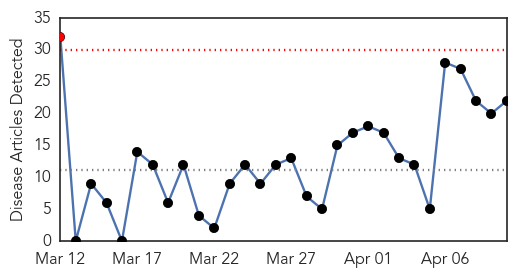
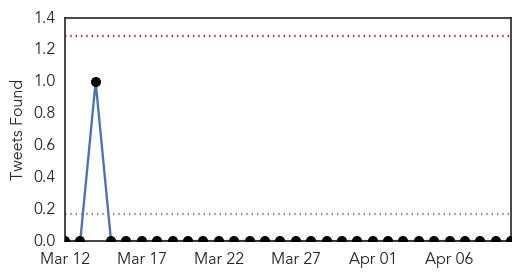
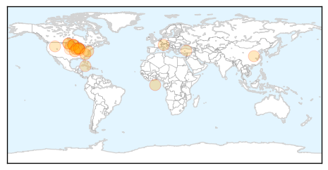
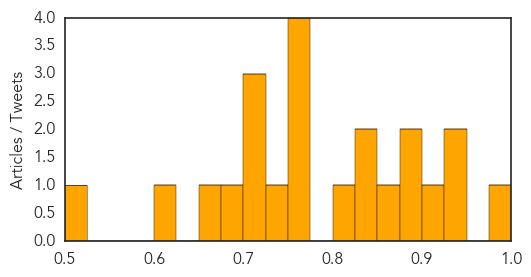

Influenza
30-Day Web Trend
1 alerts, 0 warnings

30-Day Twitter Trend
0 alerts, 0 warnings

Article Locations
Article Confidences
Top Articles:
- 0.984
- Brought by Wild Neighbors, Deadly Bird Flu Attacks Turkey Flocks
- 0.943
- No reported cases, but Wabash Valley vets keep eye on dog flu
- 0.930
- 1918 influenza epidemic struck hard, fast
- 0.921
- Missouri lifts avian flu quarantines
- 0.896
- Researchers fear avian flu may be here to stay
- 0.881
- Canine flu hits Chicago area
- 0.870
- UofL-led study focuses on flu vaccine for children with neurological disorders
- 0.840
- Canine flu outbreak in Chicago
- 0.831
- Turkey flock H5 influenza positive
- 0.822
- As Turkeys Drop Dead in Minnesota, the Ducks Become Key Suspects
- 0.751
- April 10, 2015 Archives
- 0.751
- April 10, 2015 Archives
- 0.751
- April 9, 2015 Archives
- 0.751
- April 9, 2015 Archives
- 0.738
- Bird flu found on at least 15 turkey farms in Midwest
- 0.715
- Bird flu found on at least 15 turkey farms in Midwest
- 0.711
- Michiana veterinarians prepare for possible spread of dog flu
- 0.706
- Bird flu found on at least 15 turkey farms in Midwest
- 0.696
- Bird Flu Found on at Least 15 Turkey Farms in Midwest
- 0.657
- Avian Influenza Presumed In Dickey County Turkey Flock
- 0.606
- Canine flu vaccine available in the area
- 0.511
- Dog Flu Outbreak Spreading In The Midwest
Top Tweets:
-
No tweets found for Apr 10, 2015